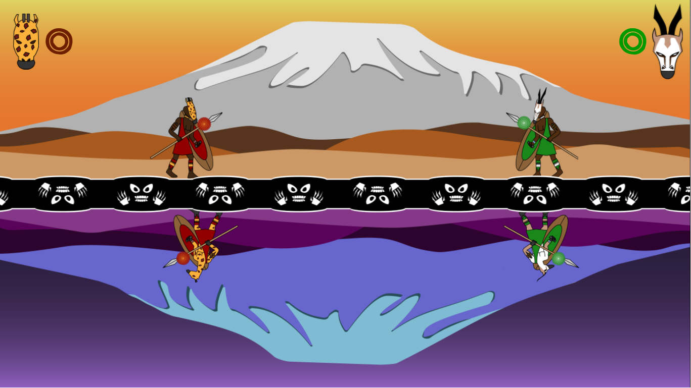
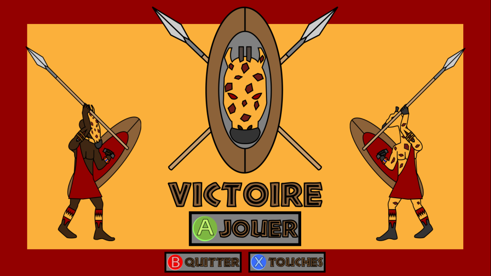
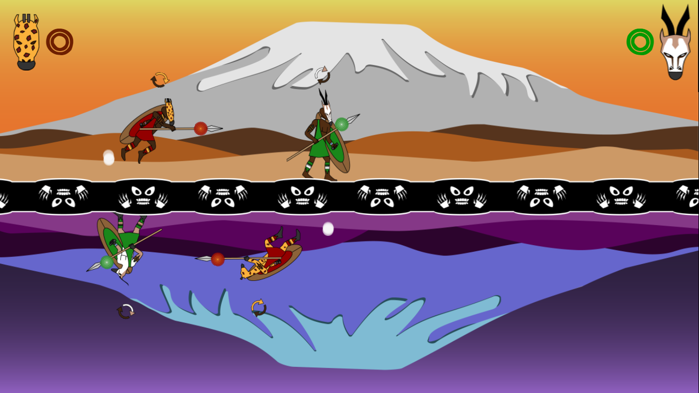
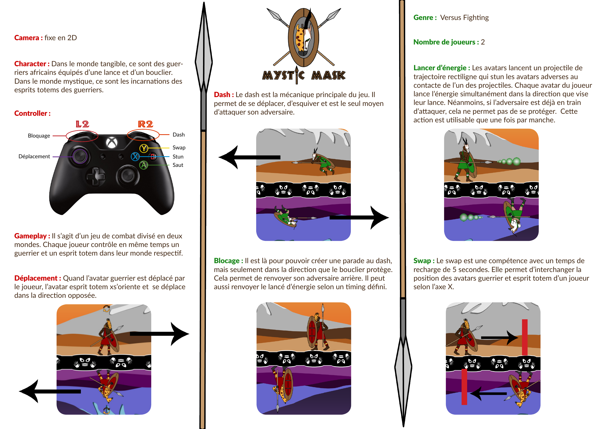

Mystic Mask
Description
Mystic Mask est un jeu de Versus Fighting. Chaque joueur contrôle en même temps un guerrier massai et son reflet dans le monde spirituel. L'objectif est de faire un dash sur au moins l'une des deux entités que contrôle son adversaire.
Un seul coup suffit pour gagner une manche. Le joueur devra faire très attention à la fois aux déplacements de son guerrier et de son reflet.
Trailer

Contexte
Mystic Mask est un projet étudiant fait à l'ICAN en première année lors du deuxième semestre. En groupe de quatre, nous devions faire un jeu de Versus Fighting sur Construct2. Ce logiciel n'a pas été enseigné en cours, l'un des objectifs de ce devoir était de nous apprendre à nous adapter à un moteur pour nous rendre autonome.
Les membres du projet
Blot Paul (Moi) : Graphiste + Animation + Sound Designer + Testeur
Villagordo Stephane : Sound Designer + Game Designer
Lopes Maxime : Graphiste + Animation + Game Designer
Montella Guillaume : Programmeur + Game designer
Bilan
C'est le premier jeu vidéo que j'ai réalisé en équipe. J'ai beaucoup appris au sujet de la gestion de projet et de management d'une équipe.
J'ai dû apprendre à maîtriser le logiciel Illustrator pour faire les graphismes du jeu : les animations des personnages, le décor du jeu et son interface. J'ai fait le sound design du jeu. J'ai dû bricoler en peu de temps des sons trouvés, identifier les événements sonores du jeu et mixer l'ensemble pour l'intégrer au jeu.
Galerie



Document de présentation

Et si on travaillait ensemble ?
Parlons de votre projet. Un jeu à développer, une équipe à accompagner, des cours à organiser ou un outil à créer ? Écrivez-moi.
Montpellier, France